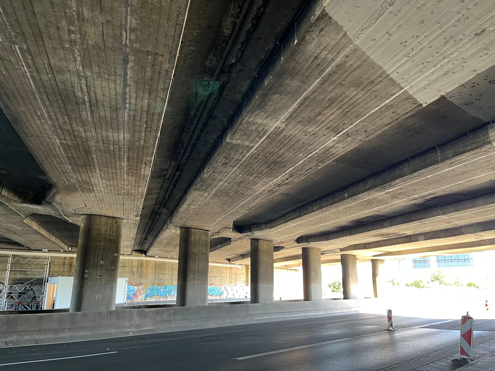
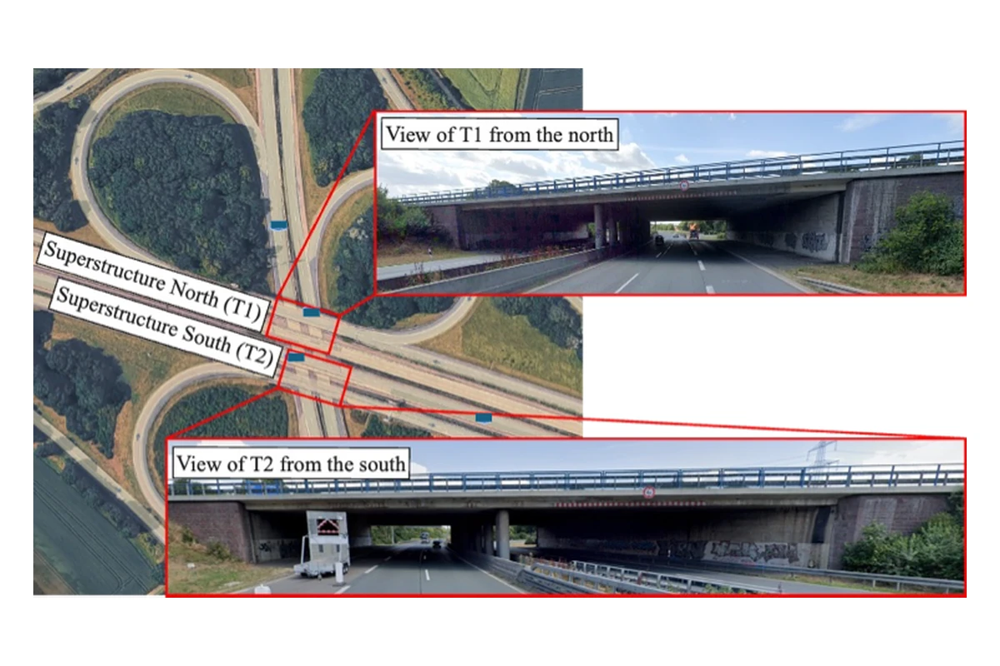
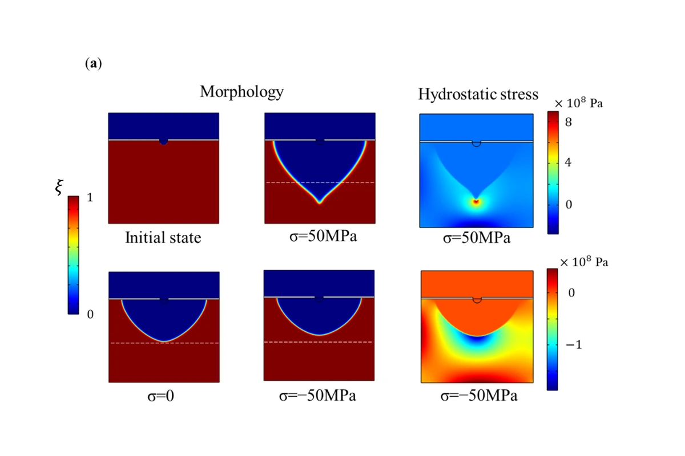
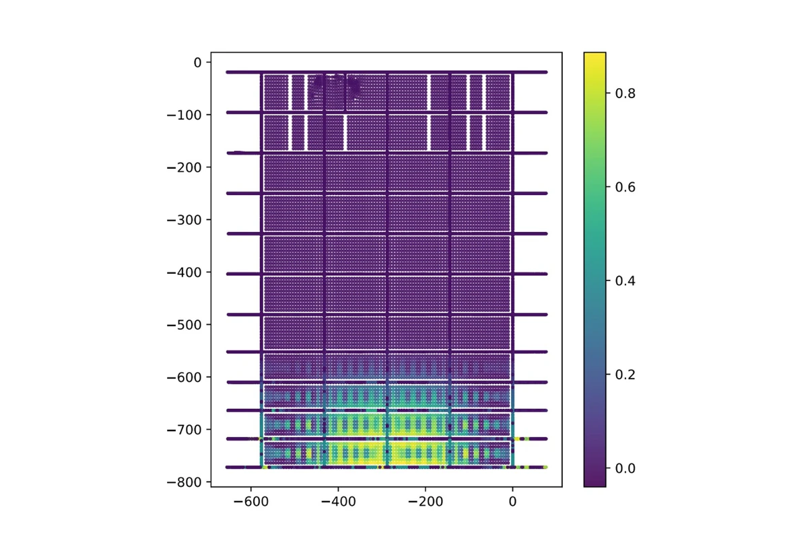
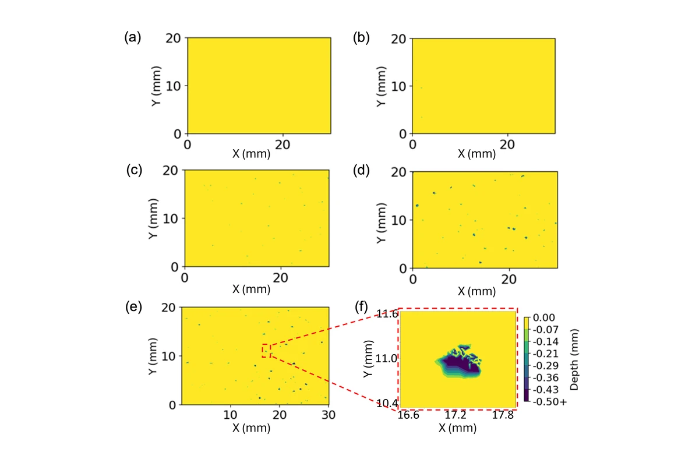
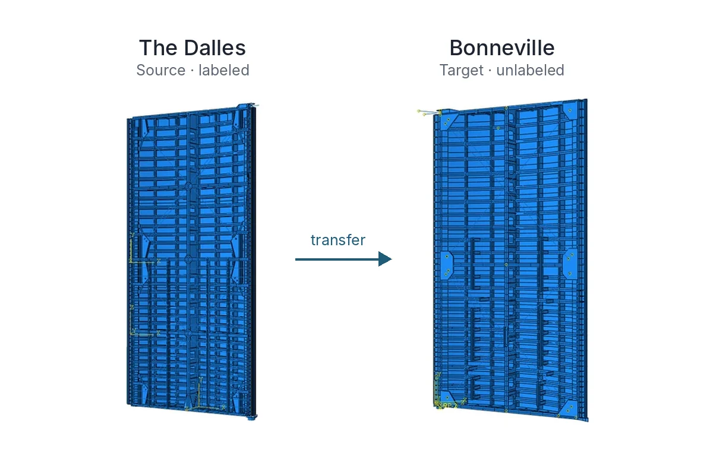

Hi, I'm Guofeng Qian.
I study how structures age, and how measurements and models can tell us about it before it becomes a problem.
My work combines structural health monitoring, physics-based simulation, and machine learning, from corrosion on U.S. navigation-lock gates to highway bridges in Germany.
Ph.D., UC San Diego · Formerly R&D Engineer at LPI, Hannover · Now in Vancouver, BC

Selected Work
Five projects, starting with monitoring bridges in service, followed by corrosion modeling, reliability, Bayesian updating, and damage diagnosis.

Operational Modal Analysis and Temperature Effects on Natural Frequencies
Automated modal identification on twin bridges: the damaged one vibrates lower (3.44 vs 3.52 Hz) and responds differently to temperature.

Multiphysics Corrosion Simulation and Surrogate Modeling
Stress-aware simulations of how pits grow into cracks, and surrogates that forecast 200 time steps in 1.3–5.4 seconds after training.

Uncertainty Propagation and Reliability Analysis
A gate-wide crack-initiation risk map, with 6.7× fewer evaluations in the local reliability benchmark.

Bayesian Model Updating with Real Measurements
Four-second model updates, and a laboratory forecast of the 95th-percentile pit-opening radius with 11% error, versus 51% for a power law.

Generalized Damage Diagnosis Across Similar Structures
On simulated gate responses, transferring knowledge from The Dalles cut gap-prediction error on Bonneville by 78%.
Three Questions Behind My Work
Across these projects, in research and in practice, the work comes back to the same three questions.
How Is the Structure Behaving?
Reading a structure's response through vibration, strain, acoustic emission, and fiber-optic sensing, and separating real change from the effects of temperature and traffic.
What Is Happening Inside?
Building finite-element and multiphysics models of damage we cannot see directly, then using machine learning so they run fast enough to explore uncertainty.
What Should We Do Next?
Combining models and measurements through Bayesian updating and reliability analysis, so that inspection and maintenance choices rest on evidence.
Recently
- Presented Our Study of Temperature Effects on Bridge FrequenciesLead Author · EWSHM 2026, Toulouse
- When Does Structural Monitoring Pay Off?Coauthor · EURODYN 2026, Hannover
- Testing a Corrosion Model Against Laboratory ExperimentsAccepted · Journal of Civil Structural Health Monitoring
- Digital-Twin Architectures for Inland Waterway InfrastructureBook Chapter · Woodhead Publishing
- Best Paper Award for a Federated-Learning Monitoring FrameworkCoauthor · IWSHM 2025, Stanford
Say Hello
I'm always glad to talk about structural monitoring, digital twins, or an interesting engineering problem.